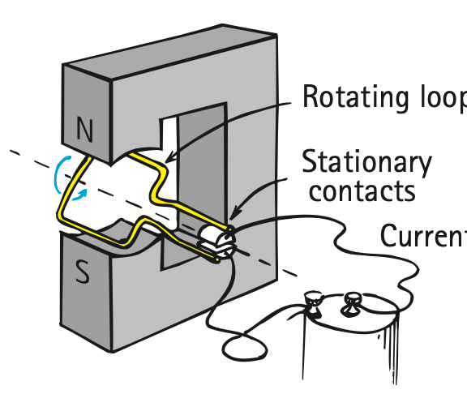

1. State one way to strengthen an electromagnet without changing the current.
2. What happens to an electromagnet when its current is switched off?
3. What microscopic idea helps explain why an iron core strengthens a coil field?
4. Which moving objects can experience magnetic force in this section’s model?
5. Name one device that uses magnetic force on a current-carrying conductor to create motion.
6. Use the motor source diagram to trace the chain current → magnetic force → motion. Identify where electrical input becomes mechanical output.

7. Electromagnet X has 50 turns around an air core. Electromagnet Y has 50 turns and the same current around an iron core. Predict which is stronger and explain the core effect.
8. A $0.20\text{ C}$ particle moves at $10\text{ m/s}$ perpendicular to a $0.60\text{ T}$ field. Determine the magnetic force magnitude.
9. A wire carries $8.0\text{ A}$ through a $0.15\text{ m}$ segment perpendicular to a $0.50\text{ T}$ field. Determine the magnetic force.
10. A $3.0\text{ C}$ charge moving at $2.0\text{ m/s}$ experiences $9.0\text{ N}$ of magnetic force. Determine $B$ for perpendicular motion.
11. A motor and a lifting electromagnet both use current and magnetic fields but produce different useful outcomes. Compare the role of magnetic force in the two systems.
12. A team proposes doubling both the current and wire length in a perpendicular-field force setup while holding $B$ fixed. Predict the force change using $F=BIL$ and justify it.
13. If the current through a fixed electromagnet is reduced, its magnetic strength generally
14. A soft-iron core is useful because its domains can
15. Which relationship is used for a perpendicular current-carrying wire?
16. A $1\text{ C}$ charge moving at $5\text{ m/s}$ in a $2\text{ T}$ perpendicular field experiences
17. A force of $4\text{ N}$ acts on a $2\text{ C}$ charge moving at $1\text{ m/s}$ perpendicular to the field. The field strength is
18. A fixed wire carries twice the current in the same field over the same length. Its magnetic force becomes
19. Which system is a direct application of a controllable electromagnet?
20. Which statement best corrects “the wire itself permanently turns magnetic when current flows”?